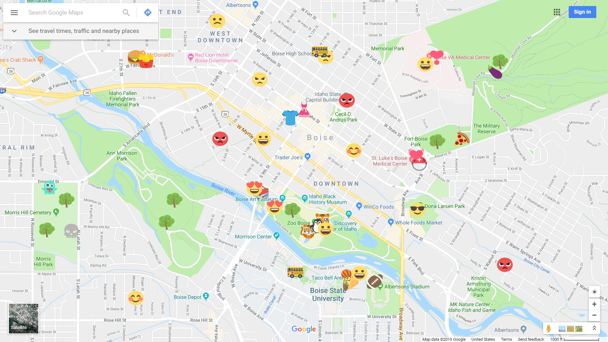

Emoji Place
Quick Summary
Concepting • Programming • Graphic Design

Emoji place was created as a concept location review app. Users of the app are simply allowed to place different emoji markers on a map as a way to review different locations and businesses. This project was created in about three weeks and was made by me and Dylan Burry.
Contributions
- Primary app developer - Used Ionic/React to create the app
- Database - Set up the database to hold user data/emoji placement using Firebase
- Concepting - Came up with the concept for the app
- Graphic Design - Designed visual aspects of the app including the logo/icon, splash screen, and app layout
Technology Used
Media